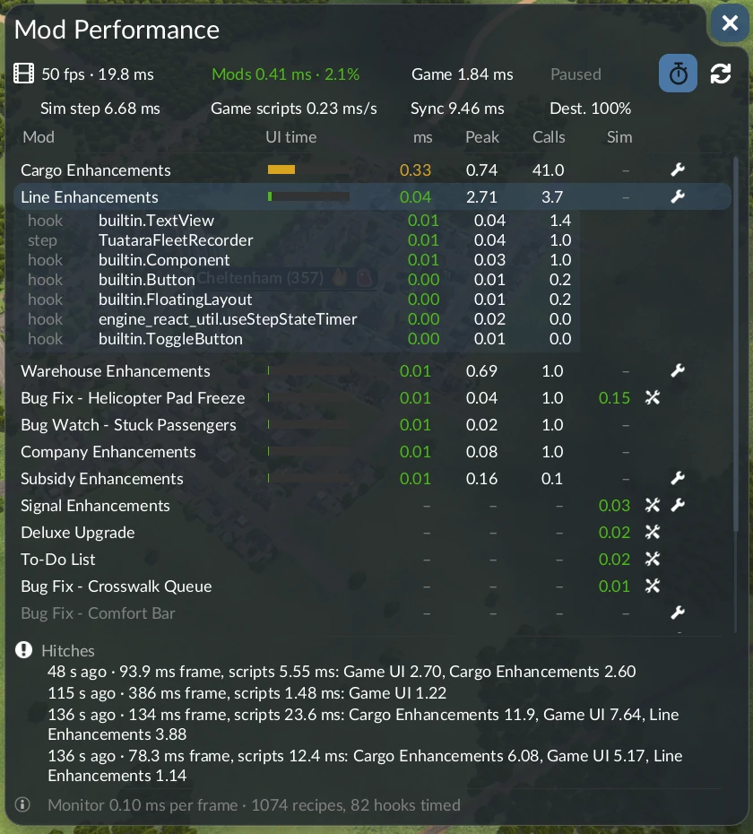
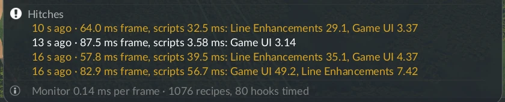

Mod Performance Monitor
When the game stutters or runs slowly, it is hard to tell which mod is to blame. This mod times the interface scripts and game scripts of every mod, credits each piece to the mod it belongs to, and shows the result in one window, with the last hitches and the mods that took the most of them.
Monitor
Setting: Monitor · On by default
- 170 frames a second, 14.3 ms each; all mods together take 0.06 ms of that (0.4 %).
- 2The game's own interface scripts, 1.26 ms a frame.
- 3The game speed, here Paused. While the game runs: game time per real second, yellow or red when the simulation can't keep up.
- 4The simulation's own timings: time per step, how busy it is and the mods' game scripts' share, and the sync with the interface.
- 5A row per mod, heaviest first: time per frame with a bar (UI time), its worst frame in the last 2 seconds (Peak), calls per frame and game script time (Sim). The game's own scripts and the monitor sit at the bottom, in lighter grey.

- 1Its heaviest pieces: what each is (here wrappers and a per-frame step) and its name, with time per frame, longest call and calls.
- 2Sim: each mod's game scripts, in ms per real second.
- 3Badges: crossed tools for a mod with game scripts, a spanner for one that wraps functions of the game's own scripts.
- 4Greyed out: mods that ran nothing in the interface.

- 1How long ago, the frame's length, how much of it interface scripts took, and the mods that took the most.
- 2A long frame with little script time is the game's own work, not a mod's.
- 3The monitor's own cost, and how much it times.
Why
The game's own tools show how long a frame takes, but not which mod the time went to, and a stutter every few seconds hides in an average.
What it does
A stopwatch button beside Data Layers opens the Mod Performance window. It shows frames per second, the share of each frame all mods take together, the game speed and the simulation's own timings, then a row per mod, heaviest first: time per frame with a bar, its worst frame in the last 2 seconds and calls per frame. Click a mod to see its heaviest pieces by name. Below, the last hitches name the mods that took the most of them.
How to use
- Click the stopwatch button beside Data Layers.
- Look for yellow and red: green is fine, yellow worth a look, red costly. Mods that ran nothing are greyed out.
- Click a mod's row for its heaviest pieces.
- The stopwatch in the window stops and starts measuring; the arrows beside it reset peaks and hitches.
Good to know
- It times the interface scripts of every mod and of the game itself: how long a window or HUD element takes to build, per-frame steps, timers, event handlers, and the game's windows and functions a mod replaces or wraps.
- Per frame, green is under 0.25 ms and red over 1 ms. A peak turns yellow from 4 ms and red from 16.7 ms, a whole frame at 60 fps.
- A hitch is a frame of 50 ms or more that stands out from the usual frame, or where interface scripts took 20 ms. One with little script time is the game's own work, such as saving.
- The game lowers a chosen 2× or 4× to what its simulation can keep up with, while the speed buttons keep showing your choice. The window's game speed shows what you really get, so a slow "fastest" is the simulation's own cost.
- Work done straight from a click, a table sort or a filter isn't timed.
- The monitor has a small cost of its own, shown at the foot of the window. Switch it off in the mod's Settings when you aren't looking for something.
Game Script Timing
Setting: Game Script Timing · On by defaultWhy
Game scripts run on the simulation's threads, where a slow one costs game speed rather than frame rate. The interface's timings don't see them.
What it does
With Monitor on, also times every mod's game scripts, the part of a mod that runs in the simulation. The window's Sim column shows each mod's time in ms per real second over the last 30 seconds, a click on the mod its heaviest functions with their longest recent call, and the simulation line how much of the simulation's time all mods' game scripts take.
Good to know
- The parts of game scripts that run in the interface aren't timed.
- Their totals are kept in your save (a few KB) and dropped by the game once the mod is removed.
Hitch Log
Setting: Hitch Log · Off by defaultWhy
A hitch you noticed a minute ago may be gone from the window by the time you look, and a mod's author needs figures to act on.
What it does
Writes each hitch to the game log (stdout.txt) with the mods that took the most of it, at most one line a second, and once a minute a count of the slow frames, the game speed (game time per real second, the engine's speed and its estimated maximum), the simulation's timings and the game scripts' time, to send to a mod's author.
Good to know
- Off by default.
Settings
Choosing a save's mods: the gear next to Mod Performance Monitor → Settings. Each save keeps its own choice. Off turns a feature off completely.
| Setting | Default | What it does |
|---|---|---|
| Monitor | On | Times every mod's UI scripts and shows them in the Mod Performance window (stopwatch button at the top left). Off: nothing is timed. |
| Game Script Timing | On | With Monitor On: also times every mod's game scripts, the part of a mod that runs in the simulation, and shows them in the window's Sim column, in ms per real second. Their totals are kept in the save (a few KB). Off: game scripts aren't timed. |
| Hitch Log | Off | Writes each hitch (a frame of 50 ms or more that stands out) to the game log (stdout.txt) with the mods that took the most of it, at most one line a second, and once a minute a count of the slow frames, the game speed (game time per real second, the engine's speed and its estimated maximum) and the simulation's timings. |
| Logging | Off | Writes the mod's messages to the game log (stdout.txt), for bug reports. |
More
Compatibility
Works with any map and any mod, including other authors': it times their scripts without changing what they do.
Known issues
- A mod that wraps a function of the game's own scripts can be charged for the game's code that runs inside it, so a single large call may look heavier than the mod's own share. For example, opening a subsidy window counts the game's own window building against the mod that wraps it.